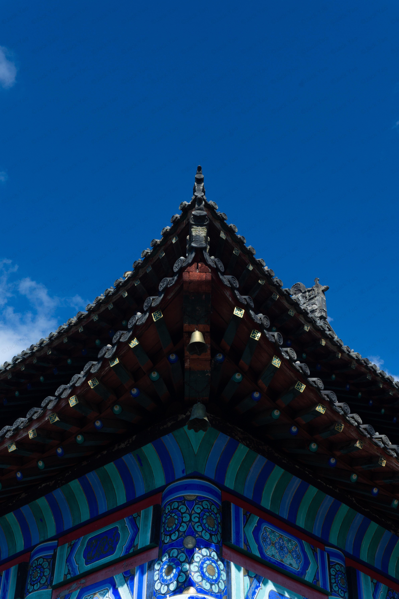
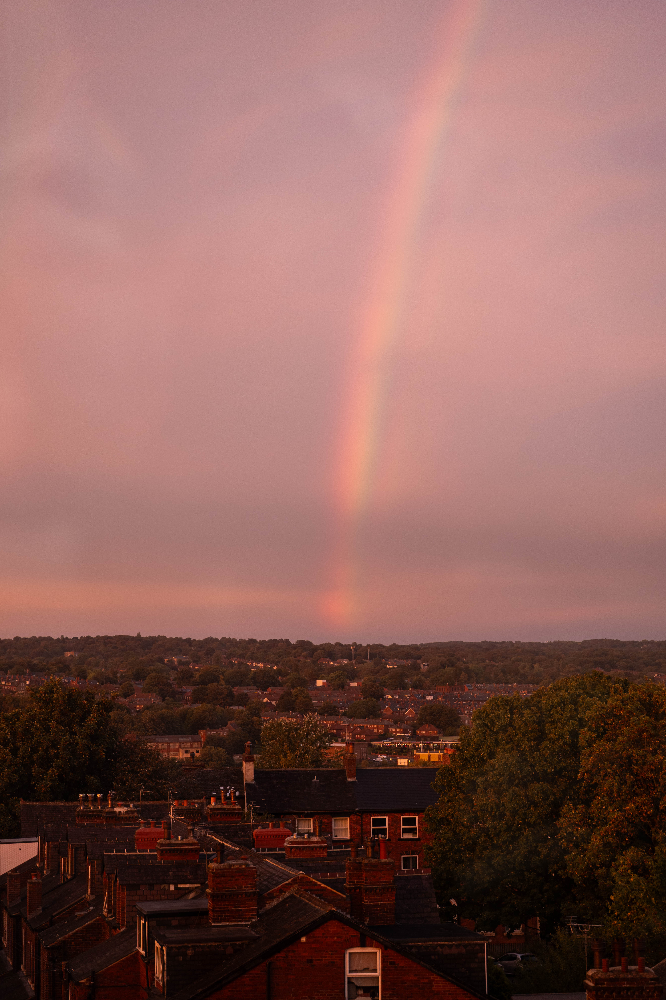
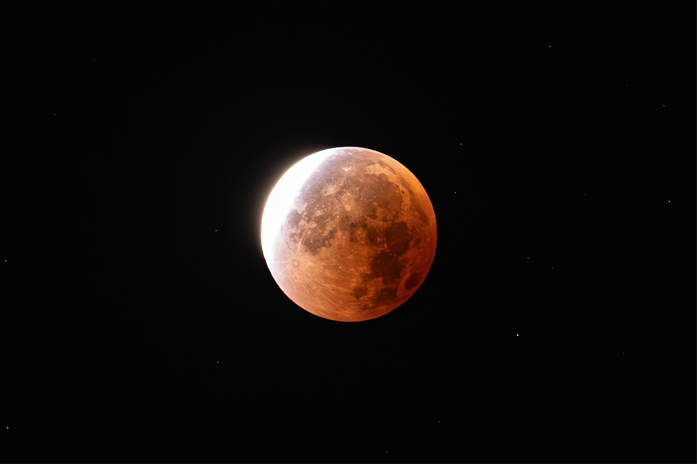

Photography
A selection of my photographs. Click a photograph to view the full image.

Lens: Sony E 55–210mm F4.5–6.3 OSS
1/1250s · f/6.3 · ISO 400 · 210mm


Lens: Sony E PZ 16–50mm F3.5–5.6 OSS
1/200s · f/14 · ISO 100 · 35mm


Lens: LUMIX S 70–300mm F4.5–5.6
1/40s · f/4.5 · ISO 800 · 70mm


Lens: LUMIX S 70–300mm F4.5–5.6
1/2s · f/6.3 · ISO 4000 · 300mm (cropped)